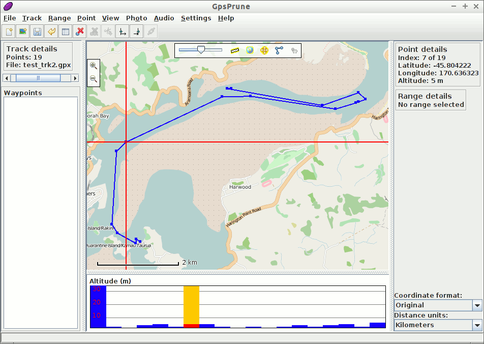

GpsPruneクイックスタート¶
GpsPruneは、座標データを表示および編集するためのJavaアプリケーションです。GPS機器のデータの準備や、記録されたデータの分析に使用できます。
このクイックスタートでは、このライブイメージに含まれるデータファイルをロードして表示し、オンライン情報を使って追加情報を確認します。したがってこのデモでは、インターネット接続が必須です。
GpsPruneの開始¶
スタートメニューから を選択します。これにより、次のような空のウィンドウが表示されます。

次に、メニューコマンド を使用して、読み込むファイルを選択します。読み込むファイルには、GPXファイル、KML、 KMZ、 CSV(カンマ区切り値)、TSV(タブ区切り値)ファイルが使用できます。それなりの量の記録が含まれるGPXファイルは、ディスク上の ~/data/vector/gpx/test_trk2.gpx にあり、読み込むことができます。

このファイルには二つのトラックがはいっているので、どちらのトラックを読み込むか聞かれます。最初のトラックを選択して、OKを押してください。
白い背景に青でマークされたトラックが表示されるはずです。このトラックにウェイポイントがある場合(ない場合もあります)は、それも表示され、その名前が付加されます。メインマップ表示の下には高度チャートがあり、トラックに高度が含まれている場合は、そのトラックのプロファイルが表示されます。

ネットワークに接続している場合は、メインマップ表示の上部にある地球のアイコンをクリックするか、メニューオプション でマップをアクティブにできます。
{kind=link}
マウスでマップをドラッグして移動したり、マウスホイールまたはダブルクリックで拡大または縮小できます。マウスの右ボタンでドラッグすると、ズームする長方形が定義されます。右クリックメニューには、その他のオプションがあります。ポイントをクリックすると、高度やタイムスタンプなどの詳細が表示されます。高度プロファイルをクリックして、対応するポイントを選択することもできます。
表示のカスタマイズ¶
のメニューオプションでマップを変更できます。5番目の "Hikebikemap" を選択して、別のマップソースを見てみましょう。hikebikemap.org の地図を使用して、等高線やサイクルルートなど、ハイキングやサイクリングに役立つ追加情報を表示します。

高度な機能¶
次に、組み込まれているファイル・システムからファイルをロードして表示できるようになったので、さらに高度な機能を使用して、オンライン情報でこれを補完できるかどうかを確認してみましょう。
Wikipedia¶
では、このトラックがどこにあるのか、もう少し詳しく調べてみましょう。これを行うには、ポイントを選択し、メニューオプション を選択します。選択した点に最も近い座標を持つ記事のリストが表示されます。これらのエントリのいずれかをクリックすると、下のボックスに詳細情報が表示されます。

その後、 Load ボタンを使ってそのポイントをGpsPruneに読み込んだり、 Show webpage ボタンを使ってWikipediaページをブラウザにロードしたりできます。
Gpsies¶
同じエリアから別のトラックをダウンロードするオンラインサービスもあります。メニューコマンド を使ってウェブサイト gpsies.com でトラックを検索することができます。ここでも、一致するエントリのリストを取得し、その中から1つを選択して説明を表示できます。

ロード ボタンをクリックしてトラックをロードし、このトラックをすでに取得したデータに追加することを選択します。これで、両方のトラックが同じビューに表示されます。
距離の測定¶
高低差を確認するには、高低差を含むトラックの部分を選択して、その範囲のプロパティ(道のり、登り、下りなど)を表示します。
ダニーデンのすぐ北にある登山口のポイントをクリックして選択します。
を選択して、この地点を選択開始点とします。
高度プロファイルの最高点をクリックして、上昇の頂点を選択します。
を選択して、選択終了点とします。
「Range Details」 セクションでは、この部分の道のりが8.55kmで、346mを登って10mだけ下っていることがわかります。

試してみること¶
トラック内のポイントを選択し、次のコマンドで削除します。
右クリックメニューから Create series of points で独自のトラックを描画し、合計距離を測定する
を使って、作成したトラックの画像をエキスポートする。
gpx、kml、kmz、csvのどれかの形式の独自トラックファイルがある場合は、GpsPruneにロードしてみて、使用可能なマップ上でトラックを表示します。
他のシステムでの GpsPrune の利用¶
このライブイメージでGpsPruneを試した後に、別のLinuxシステムでもMac OSXでもWindowsでも利用できます。一部のLinuxディストリビューションでは、通常のソフトウェアライブラリにGpsPruneが含まれています( "Prune" や "GpsPrune" を検索してください)。あるいは、ホームページから最新版をダウンロードすることもできます。
インストールする必要はありませんが、バージョン1.5以上のJavaランタイムをインストールする必要があります。GPSBabel 、gnuplot 、Exiftool 、Java3d などのフリーソフトウェアをインストールすることで、GpsPruneの機能を拡張することができます。
永続的なシステムにGpsPruneをインストールしたら、メニューオプションの を使って設定を保存することができます。すると次にGpsPruneを使うときに、設定が記憶されるようになります。ただし、このライブシステムを使用している場合は、コンピュータをシャットダウンすると、通常のファイルシステムに保存されているすべてのファイルが失われます。
ダウンロードしたマップタイルをディスクに保存するには、メニューオプションの を選択し、イメージを保存するディレクトリを選択します。これにより、イメージを再度ダウンロードする必要がなくなるため、表示速度が向上します。